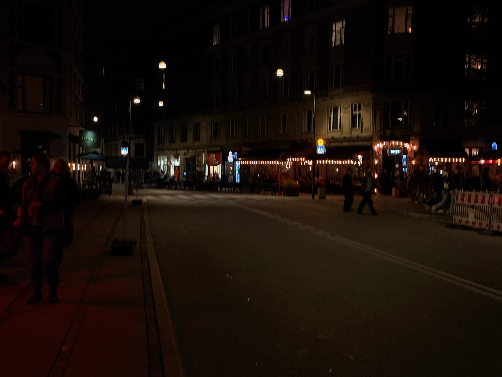
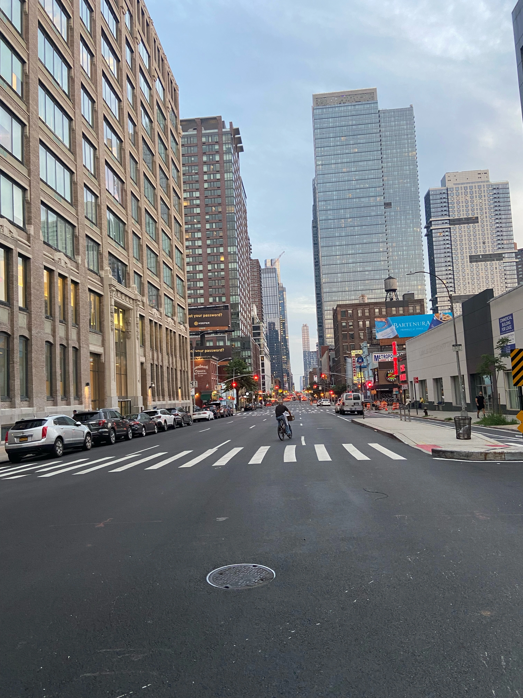
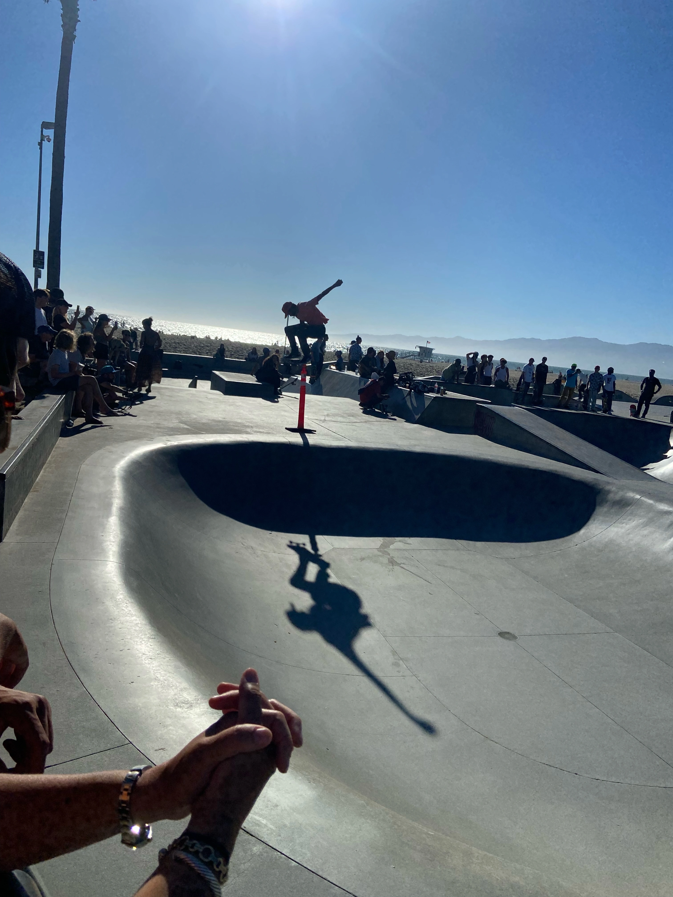
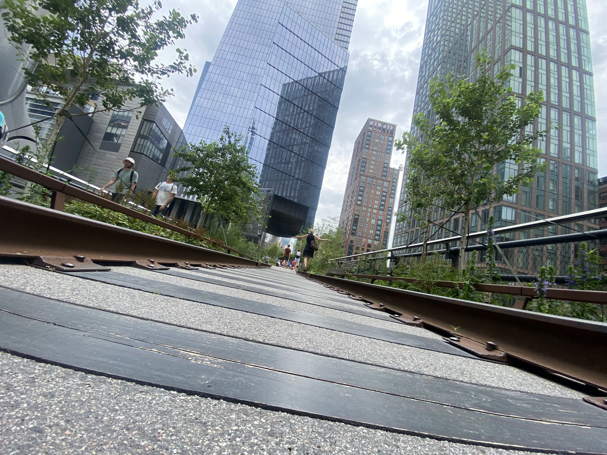
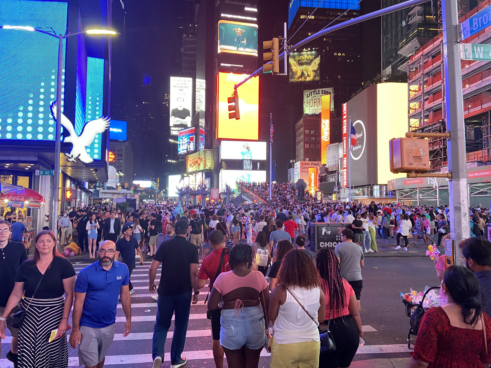
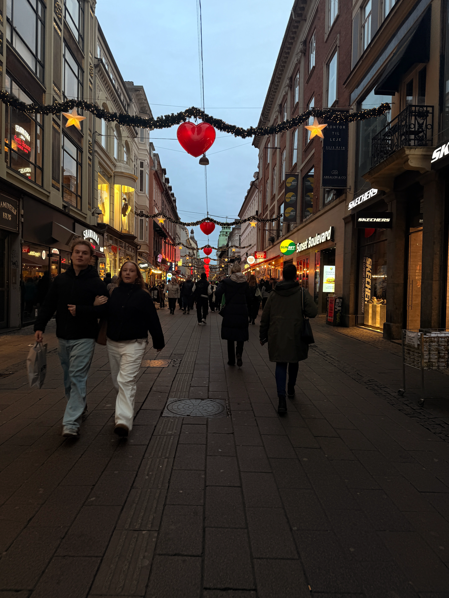
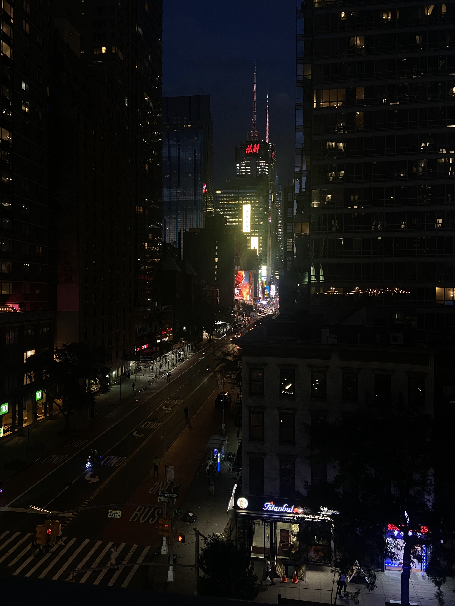

Urban Energy
Byfotografi handler om at indfange liv, lys og bevægelse i byens gader.
Neonlys, trafik og arkitektur skaber kontraster og energi som giver billederne et dynamisk udtryk.









Tips og tricks
- Fotografer om aftenen for neonlys og refleksioner.
- Brug lange lukkertider til at fange bevægelse.
- Udnyt kontraster mellem lys og skygge.
- Eksperimenter med perspektiv og vinkler.
- Inkludér mennesker for at vise byens liv.